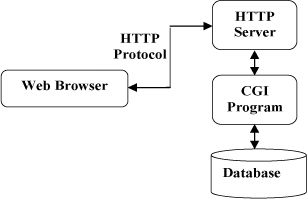
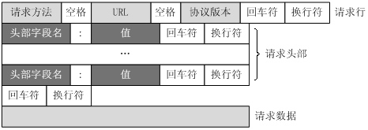
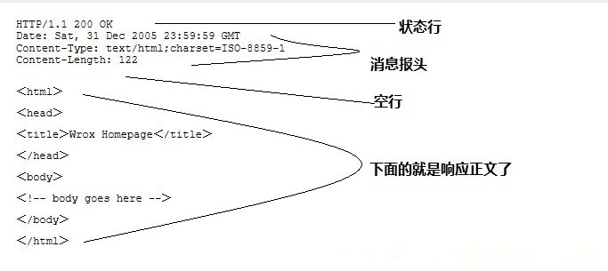
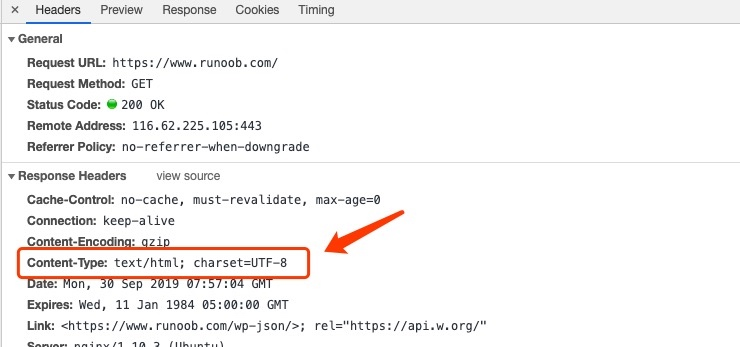

HTTP & HTTPS
超文本传输协议【HyperText Transfer Protocol】
用于从万维网（WWW:World Wide Web）服务器传输超文本到本地浏览器的传送协议
HTTP默认端口号为80

特点：
- HTTP是无连接：无连接的含义是限制每次连接只处理一个请求。服务器处理完客户的请求，并收到客户的应答后，即断开连接。采用这种方式可以节省传输时间。
- HTTP是媒体独立的：这意味着，只要客户端和服务器知道如何处理的数据内容，任何类型的数据都可以通过HTTP发送。客户端以及服务器指定使用适合的MIME-type内容类型。
- HTTP是无状态：HTTP协议是无状态协议。无状态是指协议对于事务处理没有记忆能力。缺少状态意味着如果后续处理需要前面的信息，则它必须重传，这样可能导致每次连接传送的数据量增大。另一方面，在服务器不需要先前信息时它的应答就较快。
消息结构
客户端请求消息

GET /hello.txt HTTP/1.1
User-Agent: curl/7.16.3 libcurl/7.16.3 OpenSSL/0.9.7l zlib/1.2.3
Host: www.example.com
Accept-Language: en, mi
服务器响应消息

HTTP/1.1 200 OK
Date: Mon, 27 Jul 2009 12:28:53 GMT
Server: Apache
Last-Modified: Wed, 22 Jul 2009 19:15:56 GMT
ETag: "34aa387-d-1568eb00"
Accept-Ranges: bytes
Content-Length: 51
Vary: Accept-Encoding
Content-Type: text/plain
请求方法
HTTP1.0 定义了三种请求方法： GET, POST 和 HEAD 方法。
HTTP1.1 新增了六种请求方法：OPTIONS、PUT、PATCH、DELETE、TRACE 和 CONNECT 方法。
| 序号 | 方法 | 描述 |
|---|---|---|
| 1 | GET | 请求指定的页面信息，并返回实体主体。 |
| 2 | HEAD | 类似于 GET 请求，只不过返回的响应中没有具体的内容，用于获取报头 |
| 3 | POST | 向指定资源提交数据进行处理请求（例如提交表单或者上传文件）。数据被包含在请求体中。POST 请求可能会导致新的资源的建立和/或已有资源的修改。 |
| 4 | PUT | 从客户端向服务器传送的数据取代指定的文档的内容。 |
| 5 | DELETE | 请求服务器删除指定的页面。 |
| 6 | CONNECT | HTTP/1.1 协议中预留给能够将连接改为管道方式的代理服务器。 |
| 7 | OPTIONS | 允许客户端查看服务器的性能。 |
| 8 | TRACE | 回显服务器收到的请求，主要用于测试或诊断。 |
| 9 | PATCH | 是对 PUT 方法的补充，用来对已知资源进行局部更新 。 |
响应头信息
HTTP请求头提供了关于请求，响应或者其他的发送实体的信息。
部分常用请求头：
| 应答头 | 说明 |
|---|---|
| Allow | 服务器支持哪些请求方法（如GET、POST等）。 |
| Content-Encoding | 文档的编码（Encode）方法。只有在解码之后才可以得到Content-Type头指定的内容类型。 |
| Content-Length | 表示内容长度。只有当浏览器使用持久HTTP连接时才需要这个数据。 |
| Content-Type | 表示后面的文档属于什么MIME类型。(详情见后) |
| Date | 当前的GMT时间。你可以用setDateHeader来设置这个头以避免转换时间格式的麻烦。 |
| Expires | 应该在什么时候认为文档已经过期，从而不再缓存它 |
| Last-Modified | 文档的最后改动时间。 |
| Location | 表示客户应当到哪里去提取文档。Location通常不是直接设置的，而是通过HttpServletResponse的sendRedirect方法，该方法同时设置状态代码为302。 |
| Refresh | 表示浏览器应该在多少时间之后刷新文档，以秒计。 |
| Server | 服务器名字。Servlet一般不设置这个值，而是由Web服务器自己设置。 |
| Set-Cookie | 设置和页面关联的Cookie。 |
| WWW-Authenticate | 客户应该在Authorization头中提供什么类型的授权信息 |
状态码
当浏览者访问一个网页时，浏览者的浏览器会向网页所在服务器发出请求。当浏览器接收并显示网页前，此网页所在的服务器会返回一个包含 HTTP 状态码【HTTP Status Code】的信息头（server header）用以响应浏览器的请求。
200 - 请求成功
301 - 资源（网页等）被永久转移到其它URL
404 - 请求的资源（网页等）不存在
500 - 内部服务器错误
| 分类 | 分类描述 |
|---|---|
| 1** | 信息，服务器收到请求，需要请求者继续执行操作 |
| 2** | 成功，操作被成功接收并处理 |
| 3** | 重定向，需要进一步的操作以完成请求 |
| 4** | 客户端错误，请求包含语法错误或无法完成请求 |
| 5** | 服务器错误，服务器在处理请求的过程中发生了错误 |
content-type
Content-Type（内容类型），一般是指网页中存在的 Content-Type，用于定义网络文件的类型和网页的编码，决定浏览器将以什么形式、什么编码读取这个文件。
Content-Type 标头告诉客户端实际返回的内容的内容类型。

-
常见的媒体格式类型如下：
text/html ： HTML格式
text/plain ：纯文本格式
text/xml ： XML格式
image/gif ：gif图片格式
image/jpeg ：jpg图片格式
image/png：png图片格式 -
以application开头的媒体格式类型：
application/xhtml+xml ：XHTML格式
application/xml： XML数据格式
application/atom+xml ：Atom XML聚合格式
application/json： JSON数据格式
application/pdf：pdf格式
application/msword ： Word文档格式
application/octet-stream ： 二进制流数据（如常见的文件下载）
application/x-www-form-urlencoded ：<form encType="">中默认的encType，form表单数据被编码为key/value格式发送到服务器（表单默认的提交数据的格式） -
另外一种常见的媒体格式是上传文件之时使用的：
multipart/form-data ： 需要在表单中进行文件上传时，就需要使用该格式